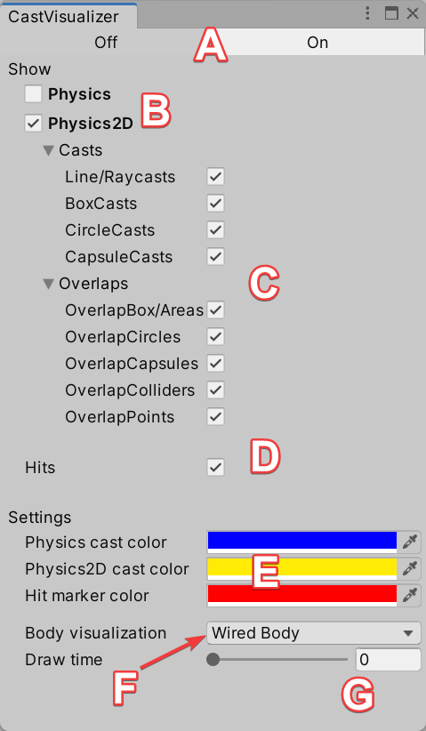
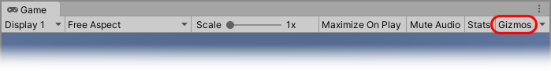
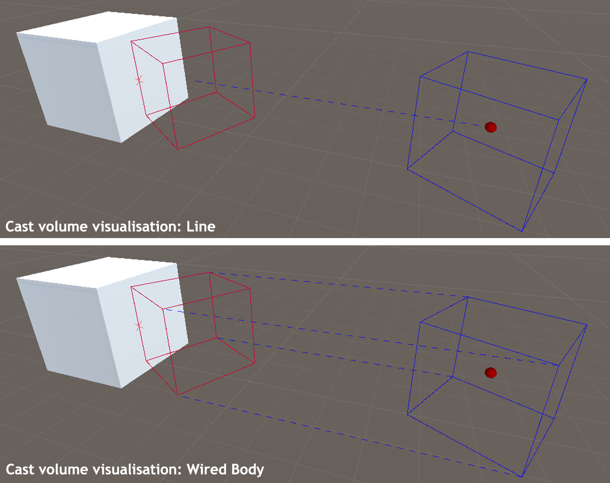

Tool extension for the Unity Editor that visualizes all casts and overlap tests in the scene view for fast debugging. It will also display the hit results and requires no code modifications.
Table of Contents
A list of the supported visualizations for modules and there calls are listed below:
| Physics | Physics2D |
|---|---|
| • Linecast | • Linecast |
| • Raycast | • Raycast |
| • BoxCast | • BoxCast |
| • CapsuleCast | • CapsuleCast |
| • SphereCast | • CircleCast |
| • CheckBox | • OverlapBox |
| • CheckSphere | • OverlapCircle |
| • CheckCapsule | • OverlapCapsule |
| • OverlapBox | • OverlapArea |
| • OverlapSphere | • OverlapCollider |
| • OverlapCapsule | • OverlapPoint |
The Cast Visualizer is located in the top menu at Tools/BG Tools/Cast Visualizer. It's a standard dockable window, so place it wherever it helps to be productive. All functions will be controlled from this window.

The Cast Visualizer window displays:
To activate/deactivate the visualization use the on/off buttons on top of the CastVisualizer window. This will show all casts and overlap tests that will be performed.
Below a description what will be shown as visualization for the cast and overlaps.
Casts
Cast will be visualized with their cast geometry at the origin and the max distance. The connection between them can be configured, see 'Volume visualization types'. The hits are shown by displaying the cast's geometry at their location. Additionally the direct hit position will be marked with the cross indication if this data are available.
Overlaps
Get visualized over the overlap test geometry. All the overlapping colliders will be highlighted as hit.
To show the visualization in the game view activate it with the 'Gizmos' button, as shown in the following image. It is deactivated by default.

Customize the visualization as you like for your needs. The configuration can be found in the CastVisualizer window too. Below a description of what can be configured.
Control what kind of types are shown with checking the required types per module to keep focus of what you're working on.
Change the colors for the visualization of the module and the hits as you like.
Choose between two different types of visualizations for the cast volume:

Select the time in seconds how long the visualizations will displayed. Use the minimal value (0 seconds) to show it only for one frame.
This package includes two sample scenes for testing purposes:
Physics
Contains all types of casts and overlap test from the physics module.
Physics2D
Contains all types of casts and overlap test from the physics2d module.
This version of Cast Visualizer is compatible with the following versions of the Unity Editor:
Unity Version: 2019.1 or higher (recommended)
Editor Version: Windows, Linux, MacOS (without Apple Silicon Chip)
Only in Editor
The visualization is only displayed in the editor. The plugin uses editor functions to draw all the visualization and they are not available on published builds.
Infinite cast distances
Casts use infinite distance by default. Due to limitations of debug rendering in the editor, it is not possible to visualize this. The plugin uses a fixed distance to show infinity casts. But the internal check is already infinity.
Mac with Apple Silicon Chip
This plugin is based on the Harmony library which didn't support the apple M1 and M2 silicon chip sets. Macs without those chips are fully supported.